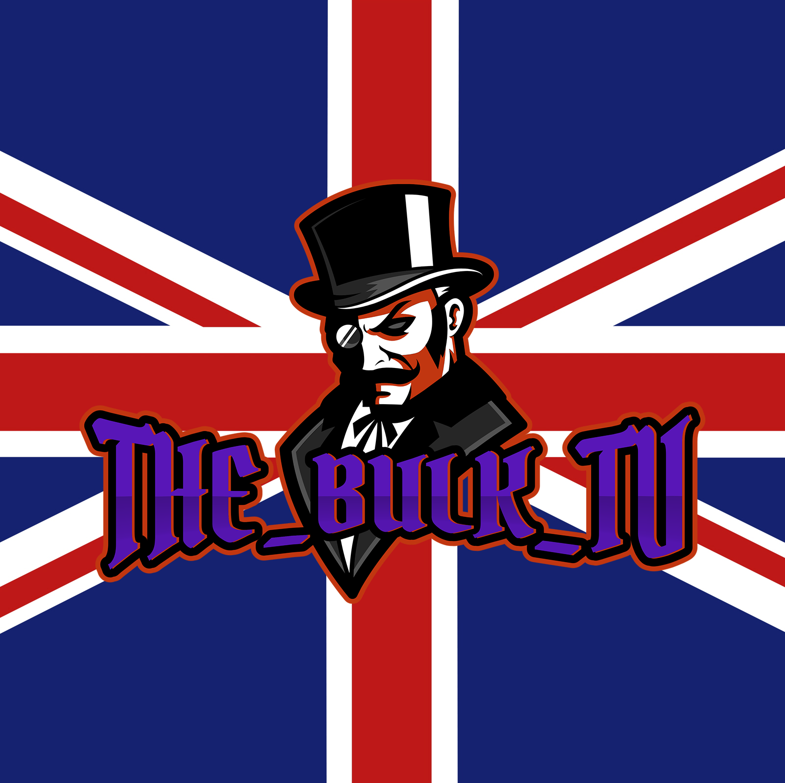
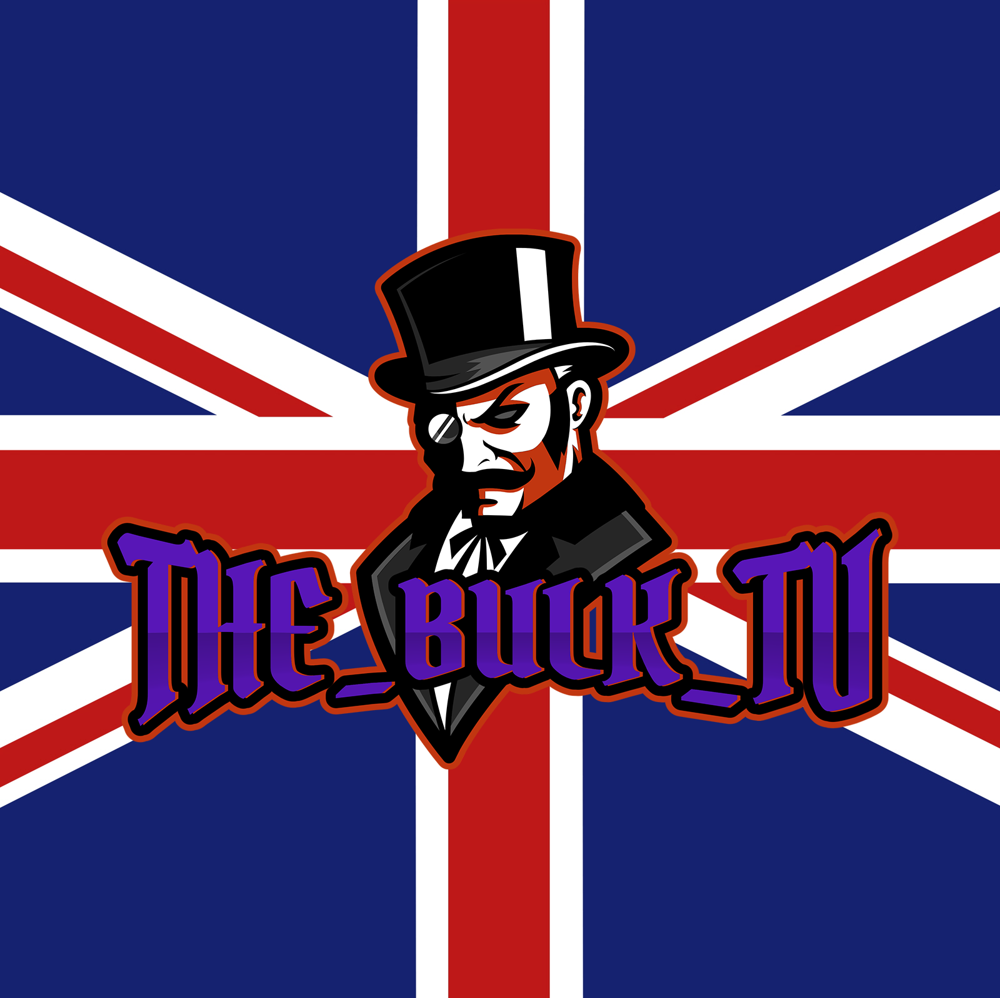

This game Is one of the most interesting games choices made in history. The reson for this is beacuse It is the middle of the story but It changed the way you can play games of this calibre. This game has so many unique game mechanics for an RPG story driven game. For me even though this game Is as good as It is. It's not my personal favourite.
Mass Effect wiki Mass Effect time line explained Mass Effect The Eden prime war (1st game) Mass Effect story ling Fandom page